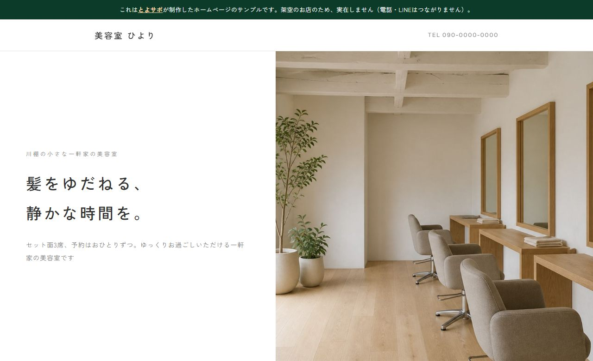

見本：美容室 ひより（架空のお店）／押すとページが開きます小さなお店・会社のホームページを、初期費用0円・月額5,500円からお作りします。写真の用意から文章づくりまで、まるごとおまかせいただけます。
分かりやすく安心な料金体系です。
「作業費 ＋ エリア料金」となります。
※作業費に関しては別途お見積りとなります。
※お見積りは無料ですので、まずはお気軽にご相談ください。
※現地調査が必要な場合は3,300円がかかります。ただしご成約の場合は費用は発生致しません。
作業事例やビフォーアフター、日々の活動の様子を
Instagramで毎日投稿しています。
「この作業、うちも頼めるかな？」の参考にぜひご覧ください。
不動産知識を活かし、顔が見える安心感をお届けします。
「電球を一つ換えてほしい」そんなご依頼でも喜んで対応いたします。
豊浦町を中心としているため、困った時にすぐに駆けつけ、迅速に対応できます。
ただの便利屋では解決できない、空き家や不動産など住まいの深い悩みも相談できます。

地域の皆様の暮らしを支える
身近な相談相手を目指しています。
初めまして、とよサポ代表の森脇靖斗と申します。
私たち「とよサポ」は、下関市豊浦町を中心に、地域の皆様のあらゆる「困った」を解決するために生まれました。
どんな小さなことでもお気軽にご相談ください。
無理な営業や押し売りは一切いたしません。皆様が安心して暮らせるよう、誠心誠意サポートさせていただきます。
以下のエリアを中心に活動しております。
その他地域も柔軟に対応いたしますので、まずはご相談ください。